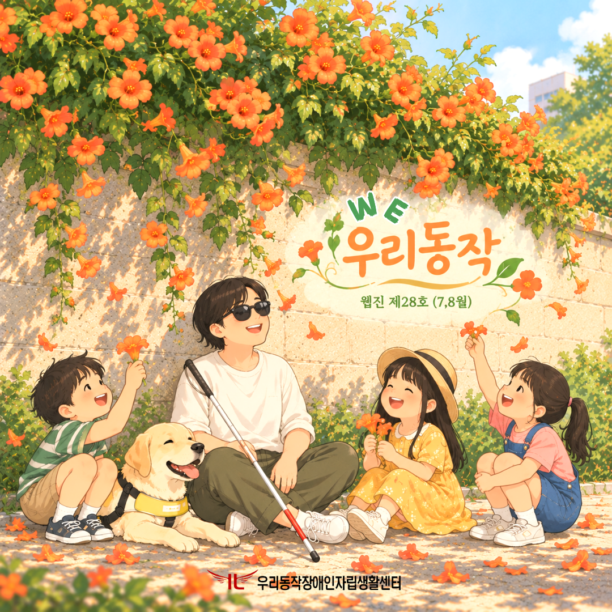
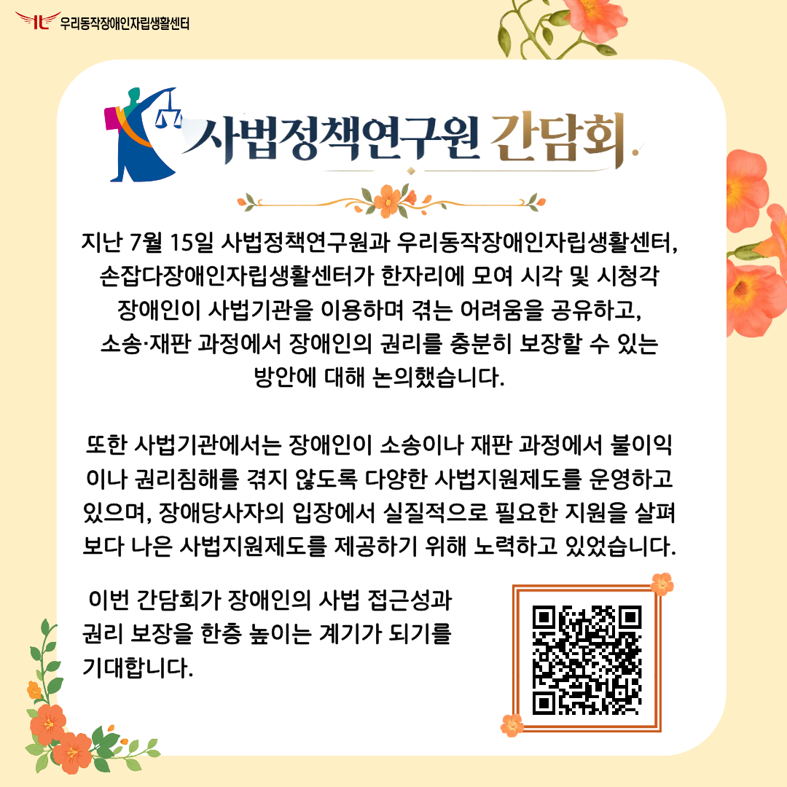
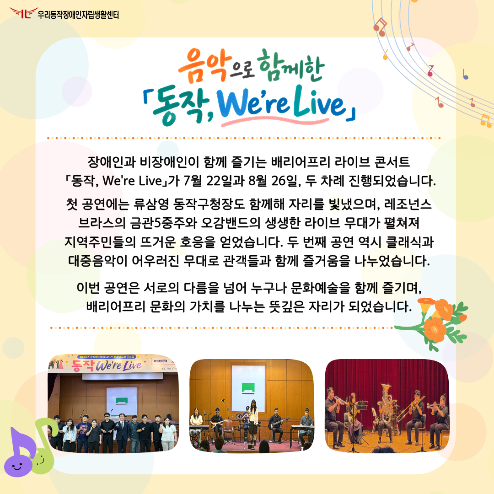
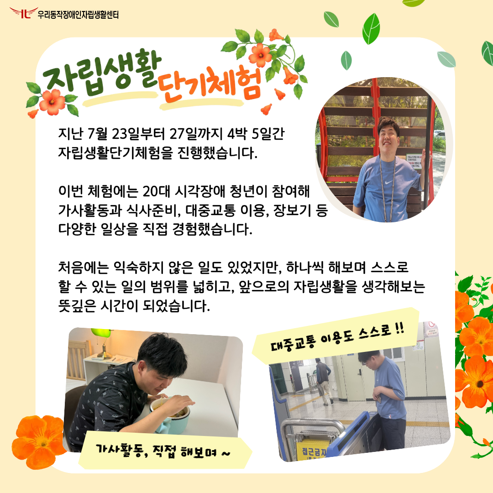
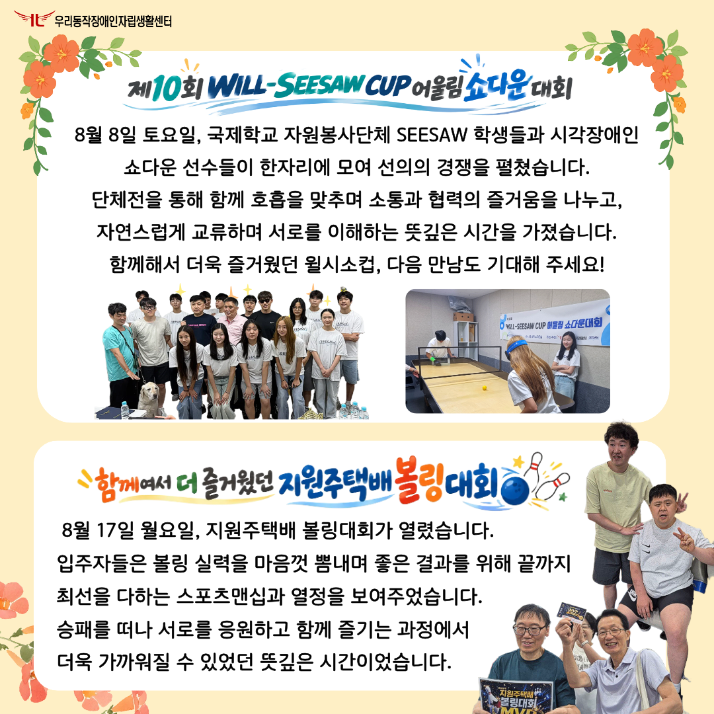
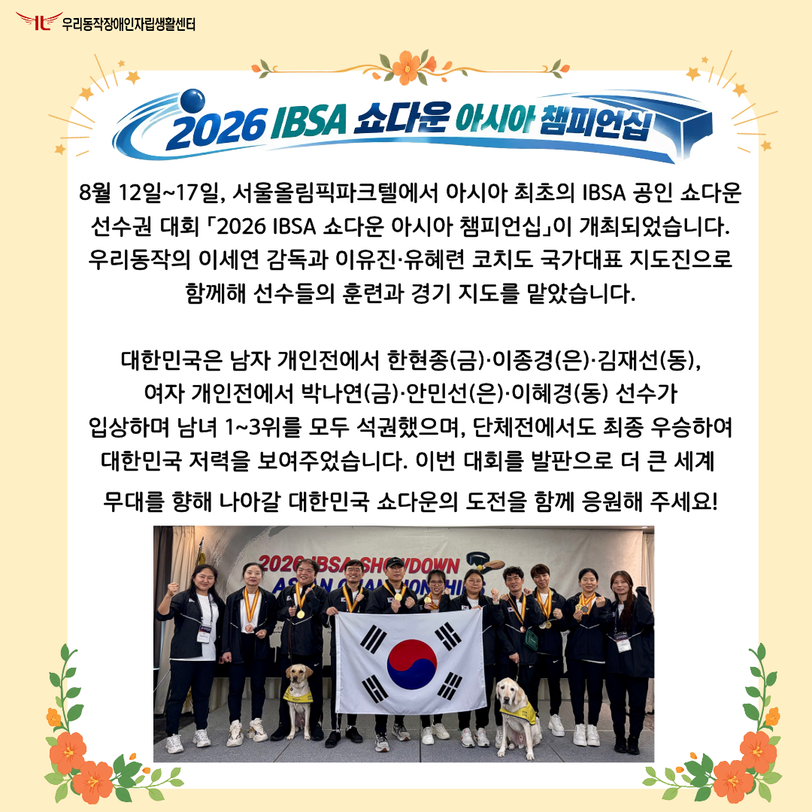
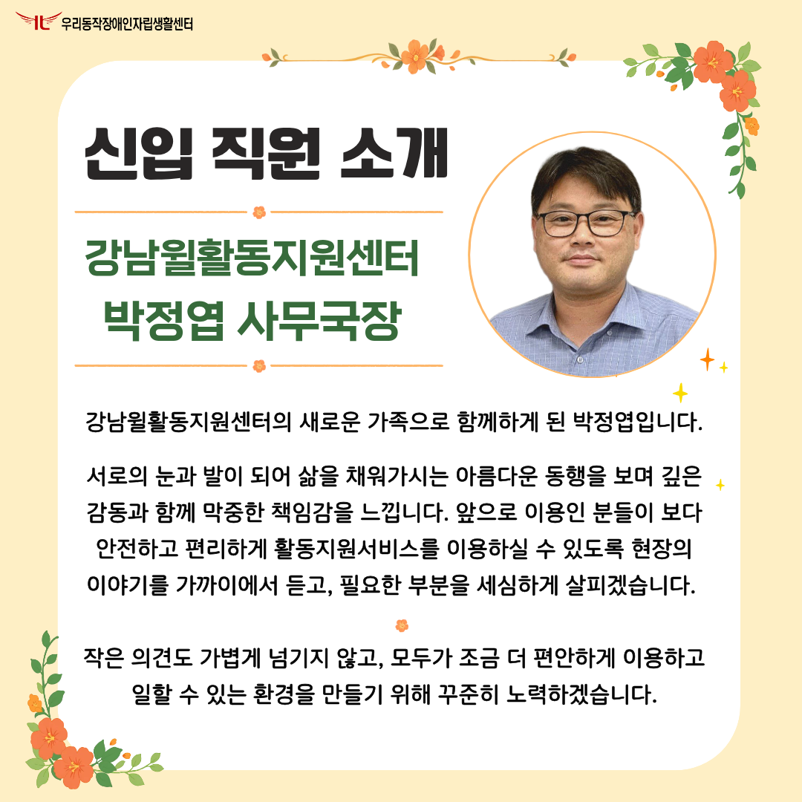
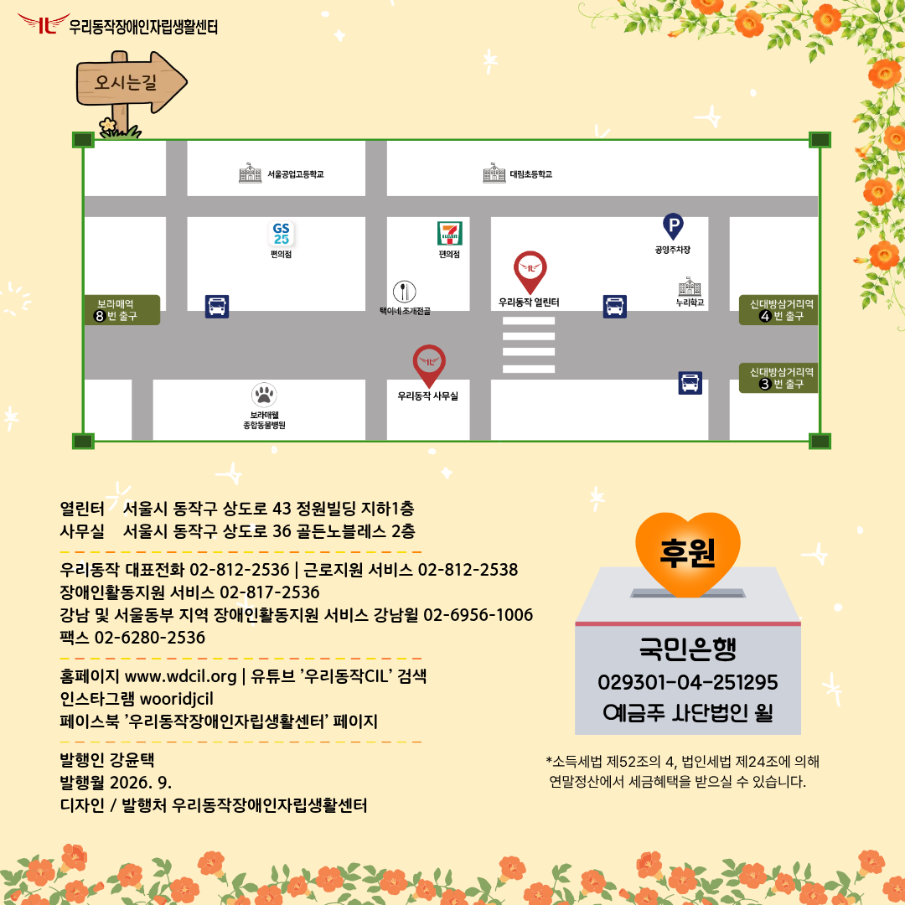

우리동작 제28호 웹진 (7,8월)
제28호 우리동작 웹진

안녕하세요. 제28호 우리동작 웹진을 발간하였습니다. 표지 설명: 주황빛 능소화가 가득 피어난 담장 아래, 시각장애 남성이 안내견과 함께 아이들과 도란도란 이야기를 나누고 있다. 아이들의 밝은 웃음소리와 남성의 환한 미소가 어우러지고, 곁을 지키는 안내견까지 함께해 한여름의 따뜻하고 평화로운 풍경을 만들어낸다.
사법정책연구원 간담회

사법정책연구원 간담회 지난 7월 15일 사법정책연구원과 우리동작장애인자립생활센터, 손잡다장애인자립생활센터가 한자리에 모여 시각 및 시청각장애인이 사법기관을 이용하며 겪는 어려움을 공유하고, 소송·재판 과정에서 장애인의 권리를 충분히 보장할 수 있는 방안에 대해 논의했습니다. 또한 사법기관에서는 장애인이 소송이나 재판 과정에서 불이익이나 권리침해를 겪지 않도록 다양한 사법지원제도를 운영하고 있으며, 장애당사자의 입장에서 실질적으로 필요한 지원을 살펴 보다 나은 사법지원제도를 제공하기 위해 노력하고 있었습니다. 이번 간담회가 장애인의 사법 접근성과 권리 보장을 한층 높이는 계기가 되기를 기대합니다. 사진 설명: 사법지원제도 자세히 보기, 오른쪽에 QR 코드 버튼을 통해 접속 가능합니다.
음악으로 함께한 「동작, We're Live」

장애인과 비장애인이 함께 즐기는 배리어프리 라이브 콘서트 「동작, We're Live」가 7월 22일과 8월 26일, 두 차례 진행되었습니다. 첫 공연에는 류삼영 동작구청장도 함께해 자리를 빛냈으며, 레조넌스 브라스의 금관5중주와 오감밴드의 생생한 라이브 무대가 펼쳐져 지역주민들의 뜨거운 호응을 얻었습니다. 두 번째 공연 역시 클래식과 대중음악이 어우러진 무대로 관객들과 함께 즐거움을 나누었습니다. 이번 공연은 서로의 다름을 넘어 누구나 문화예술을 함께 즐기며, 배리어프리 문화의 가치를 나누는 뜻깊은 자리가 되었습니다. 사진 설명: 류삼영 동작구청장과 오감밴드, 레조넌스브라스가 함께 찍은 사진, 오감밴드 공연 모습, 레조넌스 브라스 무대 소개하는 모습
자립생활단기체험기

지난 7월 23일부터 27일까지 4박 5일간 자립생활단기체험을 진행했습니다. 이번 체험에는 20대 시각장애 청년이 참여해 가사활동과 식사준비, 대중교통 이용, 장보기 등 다양한 일상을 직접 경험했습니다. 처음에는 익숙하지 않은 일도 있었지만, 하나씩 해보며 스스로 할 수 있는 일의 범위를 넓히고, 앞으로의 자립생활을 생각해 보는 뜻깊은 시간이 되었습니다. 사진 설명: 자립생활 단기체험 참여자가 공원에서 활짝 웃는 모습, 가사활동을 직접 한 모습, 대중교통을 혼자서 이용하는 모습
스포츠로 하나되는 우리동작

8월 8일 토요일, 국제학교 자원봉사단체 SEESAW 학생들과 시각장애인 쇼다운 선수들이 한자리에 모여 선의의 경쟁을 펼쳤습니다. 단체전을 통해 함께 호흡을 맞추며 소통과 협력의 즐거움을 나누고, 자연스럽게 교류하며 서로를 이해하는 뜻깊은 시간을 가졌습니다. 함께해서 더욱 즐거웠던 윌시소컵, 다음 만남도 기대해 주세요! 사진 설명: 시소 학생들과 시각장애인 쇼다운 선수들의 단체 사진, 경기 자세를 잡고 온 힘을 다해 경기에 임하는 선수들의 모습. 함께여서 더 즐거웠던 지원주택배 볼링대회 8월 17일 월요일, 지원주택배 볼링대회가 열렸습니다. 입주자들은 볼링 실력을 마음껏 뽐내며 좋은 결과를 위해 끝까지 최선을 다하는 스포츠맨십과 열정을 보여주었습니다. 승패를 떠나 서로를 응원하고 함께 즐기는 과정에서 더욱 가까워질 수 있었던 뜻깊은 시간이었습니다. 사진 설명: 브이 포즈를 취하며 즐거운 시간을 보내는 주택 동료들, 볼링대회 MVP 수상의 기쁨을 함께 나누며 환호하는 모습.
2026 IBSA 쇼다운 아시아 챔피언십

8월 12일~ 17일, 서울올림픽파크텔에서 아시아 최초의 IBSA 공인 쇼다운 선수권 대회 「2026 IBSA 쇼다운 아시아 챔피언십」이 개최되었습니다. 우리동작의 이세연 감독과 이유진·유혜련 코치도 국가대표 지도진으로 함께해 선수들의 훈련과 경기 지도를 맡았습니다. 대한민국은 남자 개인전에서 한현종(금)·이종경(은)·김재선(동), 여자 개인전에서 박나연(금)·안민선(은)·이혜경(동) 선수가 입상하며 남녀 1~3위를 모두 석권했으며, 단체전에서도 최종 우승하여 대한민국 저력을 보여주었습니다. 이번 대회를 발판으로 더 큰 세계 무대를 향해 나아갈 대한민국 쇼다운의 도전을 함께 응원해 주세요! *사진설명: 파이팅을 외치고 있는 대한민국 국가대표 선수들과, 감독, 코치진
신입 직원 소개

강남윌활동지원센터 박정엽 사무국장 강남윌활동지원센터의 새로운 가족으로 함께하게 된 박정엽입니다. 서로의 눈과 발이 되어 삶을 채워가시는 아름다운 동행을 보며 깊은 감동과 함께 막중한 책임감을 느낍니다. 앞으로 이용인 분들이 보다 안전하고 편리하게 활동지원서비스를 이용하실 수 있도록 현장의 이야기를 가까이에서 듣고, 필요한 부분을 세심하게 살피겠습니다. 작은 의견도 가볍게 넘기지 않고, 모두가 조금 더 편안하게 이용하고 일할 수 있는 환경을 만들기 위해 꾸준히 노력하겠습니다.
제26호 우리동작 웹진 안내

만족도 조사국민은행 029301-04-251295 예금주 사단법인 윌 소득세법 제52조의 4, 법인세법 제24조에 의해 연말정산에서 세금혜택을 받으실 수 있습니다. 열린터 서울시 동작구 상도로 43 정원빌딩 지하1층 사무실 서울시 동작구 상도로 36 골든노블레스 2층 우리동작 대표전화 02-812-2536 | 근로지원 서비스 02-812-2538 장애인활동지원 서비스 02-817-2536 | 강남 및 서울동부 지역 장애인활동지원 서비스 강남윌 02-6956-1006 팩스 02-6280-2536 | 홈페이지 www.wdcil.org | 유튜브 ’우리동작CIL’ 검색 인스타그램 wooridjcil 페이스북 ’우리동작장애인자립생활센터’ 페이지 발행인 강윤택 발행월 2026. 9. 디자인 / 발행처 우리동작장애인자립생활센터